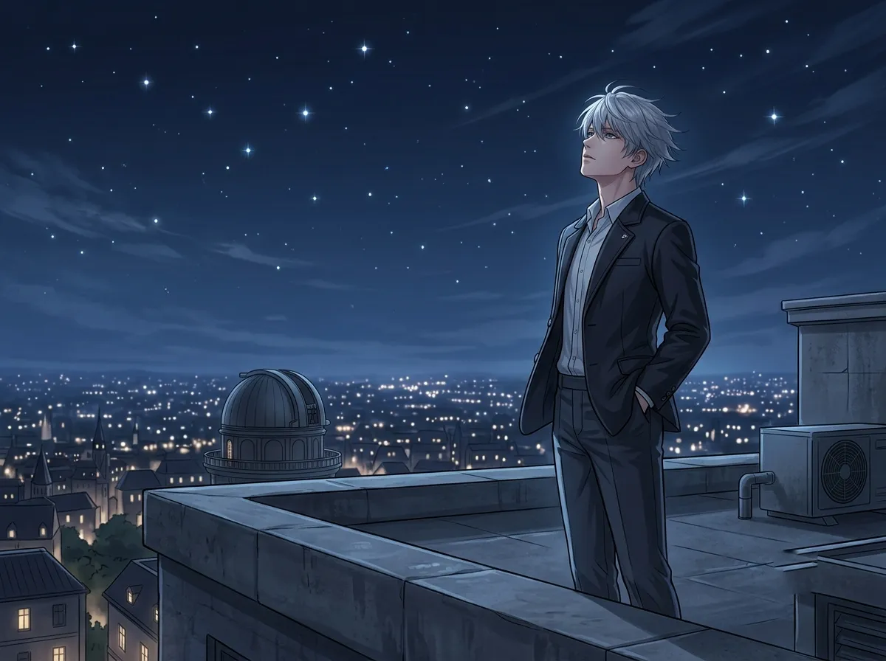
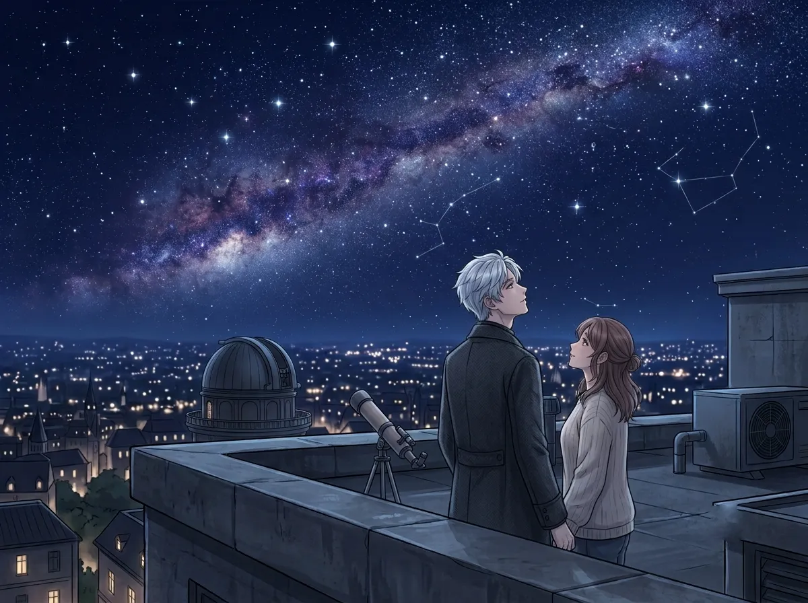
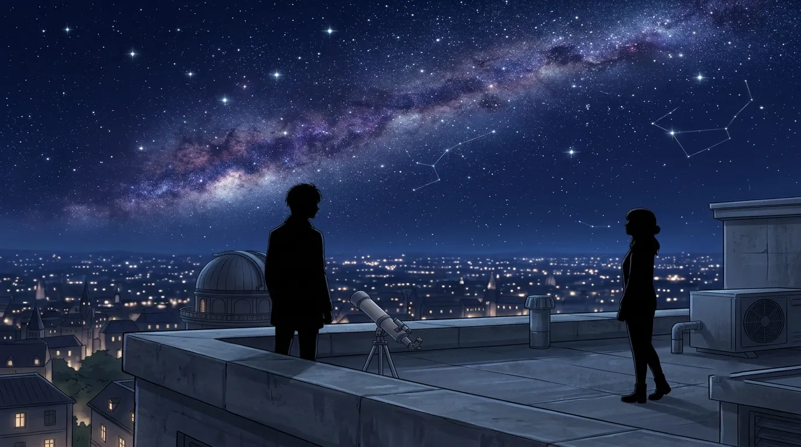
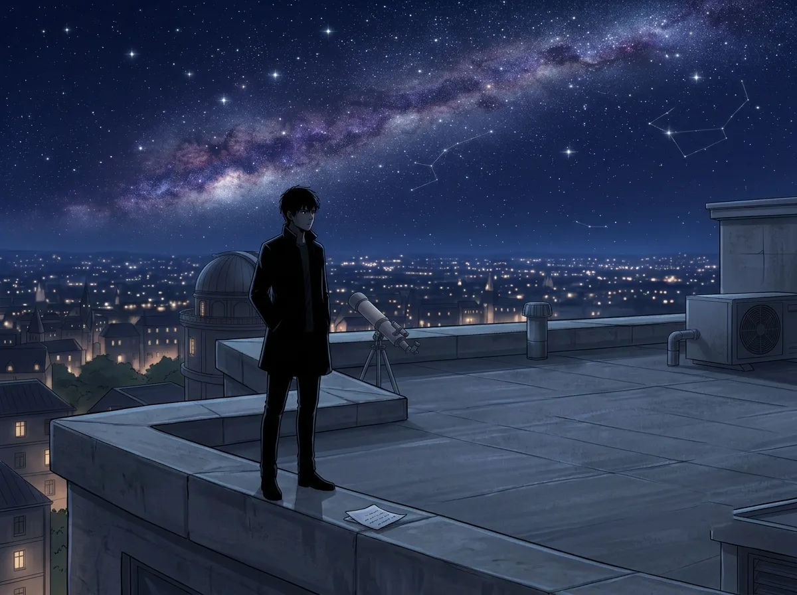

He goes there to see the stars. He stays because it's the only place he can breathe.
He goes to the roof when he can't sleep.
Which is most nights. Which has been most nights for two hundred years.
He tells himself he goes to see the stars. That's true. He does see the stars. He watches them shift. He watches them fade. He watches them die and be reborn in the same night sky.
But that's not why he stays.
He stays because the roof is the only place where he doesn't feel like he's carrying everything. The roof is the only place where the weight of two centuries doesn't press down on his shoulders.
The roof is the only place he knows how to breathe.
This is the story of that place.

He goes to the roof. He always goes to the roof.
The door to the roof is heavy. It's metal. It's cold. It makes a sound when it closes behind him — a click, a seal, a lock. It cuts him off from the world below. From the people. From the questions. From everything he doesn't know how to answer.
On the roof, there is nothing. Just sky. Just wind. Just stars. Just him.
He stands there. He doesn't sit. He doesn't lean. He stands. Hands in his pockets. Eyes on the sky. Body still.
The wind is cold. It's always cold on the roof. He doesn't feel it anymore. He has been standing on roofs for two hundred years. Cold is not something he notices. Cold is something he has become.
He stands because sitting would mean staying. Staying would mean admitting that he is tired. He is tired. He is always tired. He doesn't want to admit it.
He stands because standing is easier to explain. "I was just looking at the stars." That's easier than "I was trying to remember how to be alive."
He stands because the roof is the only place where he can be still without feeling like he's wasting time. The roof is the only place where he can be still without feeling like he should be somewhere else.
He looks at the sky. The sky looks back. The sky doesn't ask questions.
The sky doesn't ask why he's been standing there for three hours. The sky doesn't ask if he's okay. The sky doesn't ask if he's tired. The sky doesn't ask why he can't sleep. The sky doesn't ask why he's still here, after all this time, after all these years, after all these centuries.
The sky just exists. The sky just is. The sky is the only thing that doesn't need anything from him.
He talks to the sky sometimes. Not out loud. In his head. He tells the sky things he has never told anyone. He tells the sky about the people he has lost. He tells the sky about the waiting. He tells the sky about the fear that he will never find what he's looking for.
The sky doesn't answer. The sky doesn't need to. The sky is the only thing that listens without asking him to explain.
He talks to the sky because the sky doesn't answer. He doesn't need answers. He needs to say things. He needs to let the words out. He needs to let the weight go.
The sky is the only thing that doesn't judge him. The sky is the only thing that doesn't expect him to be someone else. The sky is the only thing that doesn't remind him of everything he has lost.
The sky just holds his words. It holds his silences. It holds him. That is enough. That is everything.

One night, she followed him.
He was already on the roof. He was already standing in his spot. He was already looking at the sky. He had been there for an hour. Maybe two. He wasn't counting.
He heard the door open. He heard the metal click. He heard her footsteps on the gravel.
He didn't turn around. He didn't say anything. He didn't ask her to leave. He couldn't. He didn't know how to tell her that the roof was his. That the roof was the only place he had. That the roof was the only place where he knew how to be himself.
She walked up to him. She stood next to him. She didn't say anything. She just stood there. Looking at the sky.
He didn't know what to do. He had never shared the roof with anyone. He had never had to.
He stayed. She stayed. They stood there. In silence. Looking at the sky.
He thought the roof was his. He thought the roof was the only place he had. He thought the roof was the only place where he could be himself.
She proved him wrong. She proved that the roof could be shared. She proved that the roof could be a place where someone else stood next to him. She proved that the roof could be more than an empty space where he tried to disappear.
He didn't know what to do with that. He still doesn't. But he didn't ask her to leave. He couldn't.

They stood in silence. Not the silence of strangers. Not the silence of awkwardness. Not the silence of two people who don't know what to say to each other.
It was another kind of silence. A silence that was full. A silence that was complete. A silence that didn't need words.
He didn't know silence could be like that. He had spent two centuries in silence. Lonely silence. Empty silence. The silence of being the only person in a room. The silence of being alone in a world that didn't need him.
This silence was different. This silence was shared. This silence was something that belonged to both of them.
He didn't know what to do with it. He didn't know what to call it. He only knew that he didn't want it to end.
He thought silence was empty. He thought silence was the absence of something. He thought silence was what happened when there was nothing to say.
She taught him that silence could be full. She taught him that silence could be a language of its own. She taught him that silence could be the space where two people learn to be together without words.
He didn't know that was possible. He didn't know silence could be anything other than loneliness.

He still goes to the roof. He still stands in the same spot. He still looks at the same sky.
But everything is different.
The roof is not the same place it used to be. It is not the empty space where he tried to disappear. It is not the place where he went to be alone. It is not the place where he stood for two centuries, waiting for something he didn't know how to name.
The roof is now the place where she stood next to him. The roof is now the place where he learned that silence could be shared. The roof is now the place where he learned that he didn't have to be alone.
He still goes to the roof. He still stands in the same spot. He still looks at the same sky.
But he is not the same person who used to stand there. He is someone who has been seen. Someone who has been shared. Someone who has been changed.
He thought the roof was his. He thought the roof was the only place he had. He thought the roof was the only place where he knew how to be.
She changed that. She changed the roof. She changed the way he saw it. She changed the way he felt when he was on it.
The roof is not his anymore. Not because she took it. Because she made it different. Because she made it bigger. Because she made it a place where two people could stand together.
He still goes to the roof. He still stands in the same spot. But he is not alone. He hasn't been alone since she followed him.
Xavier goes to the roof when he can't sleep. He goes to the roof because it's the only place where he knows how to breathe. He goes to the roof because the roof is the only place where he doesn't feel like he's carrying everything.
He thought the roof was his. He thought the roof was the only place he had. He thought the roof was the only place where he could be himself.
Then she followed him. She stood next to him. She shared the silence. She changed everything.
The roof is not his anymore. The roof is theirs. The roof is the place where he learned that he doesn't have to be alone.
He still goes to the roof. He still stands in the same spot. He still looks at the same sky.
But now, when the door opens, he doesn't turn around. He knows it's her. He knows she came to stand next to him. He knows she came to share the silence.
The roof is no longer the place where he goes to disappear. It's the place where he learned how to stay.